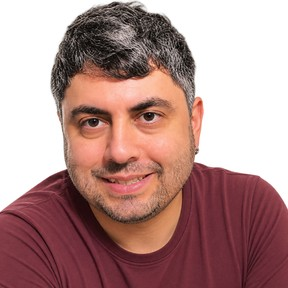
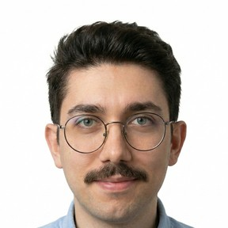

Gurbetteki İyilerin Dijital Mahallesi.
Merhaba,
Ben Naz van Norel.
İstanbul'da Siemens'te 6 yıl çalıştıktan sonra, Münih'e expat olarak atanma başvurum kabul edildi ve yaklaşık 27 yıl önce Almanya'daki gurbet yolculuğum başladı.
Almanya'da Türkiye'den gelen hiçbir aile yakınım yoktu. Bu yüzden günlük hayatımı ve sosyal ihtiyaçlarımı yıllarca büyük ölçüde kendi imkânlarımla, çoğu zaman üçüncü kişilerin çözümlerine bağlı kalarak organize etmek zorunda kaldım.
Bugün geriye dönüp baktığımda şunu görüyorum: Yeni bir ülkede hayat kurmanın en zor yanı sadece dili öğrenmek ya da iş bulmak değildi. En zor olan, doğru bilgiye ve güvenilir insanlara ulaşabilmekti.
Bu yüzden BizdenBize doğdu.
Türkiye'de elektronik mühendisliği, ardından Münih'te LMU'da (Ludwig-Maximilians-Universität) siyaset bilimi okudum. Mühendisliğin analitik dünyası ile siyaset biliminin insana ve topluma bakışı, bugün işlerime baktığım pencereyi birlikte şekillendirdi.
Aynı zamanda iki genç yetişkinin annesiyim: 19 yaşında bir kızım ve 23 yaşında bir oğlum var. Bu platformu geliştirirken sık sık onları düşünüyorum — çünkü onların da güvenle kullanabileceği bir yer kurmak istiyorum.
33 yılı aşkın kariyerimin büyük bölümü Siemens'te geçti. Bu süre boyunca farklı teknik ve operasyonel alanlarda, çoğunlukla denetçi/değerlendirici (auditor/assessor) olarak Avrupa, Amerika ve Afrika dahil dünyanın dört bir yanında çalıştım. Son yıllarda ise özellikle şu alanlarda uzman olarak çalışıyorum:
Bu çalışmalarımı uluslararası standart kuruluşlarında da sürdürüyorum: Almanya'nın ulusal standardizasyon kuruluşu DIN'de (Deutsches Institut für Normung) AB Yapay Zekâ Yasası'nın (EU AI Act) uygulanmasına yönelik çalışma grubunda uzman olarak, IEEE Standards Association (IEEE SA) çalışma gruplarında ise yapay zekâ güvenliği uzmanı olarak görev alıyorum.
Küçük ve dürüst bir not: tüm bu deneyime rağmen en az iş tecrübem Türkiye ile 🙂 Bu yüzden Türkiye'ye özel sorularda maalesef pek yardımcı olamıyorum — ama Almanya ve Avrupa'daki hayata dair elimden gelen her şeyi paylaşmaya hazırım.
Ancak mesleğimden daha önemli gördüğüm bir şey var: İnsanlara faydalı olabilmek.
Yıllardır insanlar bana Almanya'da yaşam, sosyalleşme ve yeni arkadaşlar edinme, iş bulma, ev bulma, öğrenim, çocukların okulu, resmî işlemler, girişimcilik ve teknoloji gibi birçok konuda danışıyor. Her zaman elimden geldiğince yardımcı olmaya çalıştım. Fakat bir noktada şunu fark ettim.
Tek tek insanlara yardım etmek beni mutlu ediyordu. Ama zamanım sınırlıydı. Bir kişiye yardım ettiğimde, başka yüzlerce kişi hâlâ yardıma ihtiyaç duyuyordu. Kendime şu soruyu sordum:
"Tek tek yardım etmek yerine, insanların birbirine yardım edebileceği bir platform kurabilir miyim?"
İşte BizdenBize'nin ilk çıkış noktası budur. Ben artık sadece kendim yardım etmek istemiyorum. İnsanların birbirine yardım ettiği bir kültür oluşturmak istiyorum.
Bugün milyonlarca insan ChatGPT ve benzeri yapay zekâ araçlarını kullanıyor. Özellikle gençler, yeni göç edenler, öğrenciler, iş arayanlar… Bundan çok mutluyum. Ama aynı zamanda endişeleniyorum.
Çünkü yıllardır yapay zekâ güvenliği üzerine çalışan biri olarak biliyorum ki yapay zekâ:
Özellikle yabancı bir ülkede yaşayan insanlar için yanlış bilgi bazen ciddi sonuçlar doğurabilir. Bu nedenle BizdenBize'de yapay zekâyı yalnızca bir sohbet robotu olarak değil, kontrollü, güvenilir ve insan odaklı bir yardımcı olarak tasarlıyoruz.
Bu nedenle AbiBOT'u geliştiriyoruz. AbiBOT'un amacı internette bulunan rastgele bilgileri sunmak değildir. Amacı:
Biz yapay zekânın insanların yerine karar vermesini istemiyoruz. Biz, insanların daha doğru kararlar almasına yardımcı olmasını istiyoruz.
27 yıldır Avrupa'da farklı kültürlerle birlikte yaşama fırsatı buldum. Bazı toplulukların birbirini nasıl desteklediğini hayranlıkla izledim. Bilgilerini paylaşıyorlardı, iş fırsatlarını paylaşıyorlardı, müşterilerini birbirlerine yönlendiriyorlardı. Birlikte büyüyorlardı.
Bunu gördükçe kendi kendime düşündüm: Biz neden daha fazlasını yapmayalım? Bence toplumumuzda inanılmaz bir bilgi, deneyim ve potansiyel var. Sorun, bunun görünür olmaması. BizdenBize bu görünmez köprüleri kurmak için var.
Toplum olarak bazen önce farklılıklarımızı görüyoruz. Hangi şehirden geldiğimiz, hangi üniversiteden mezun olduğumuz, hangi siyasi görüşe sahip olduğumuz, hangi etnik kökenden olduğumuz, hangi inanca sahip olduğumuz…
Oysa bunlardan çok daha önemli ortak noktalarımız var. Hepimiz çocuklarımız için daha iyi bir gelecek istiyoruz. Hepimiz güvenilir insanlarla çalışmak istiyoruz. Hepimiz başarılı olmak istiyoruz. Hepimiz birbirimizden öğrenebiliriz.
BizdenBize'nin kapısı; her görüşten, her meslekten, her yaşam tarzından, her şehirden, her etnik kökenden, her inançtan iyi niyetli insanlara açıktır. Çünkü bizi güçlü yapan şey aynı olmamız değil, birlikte hareket edebilmemizdir.
Hayatım boyunca beni en çok etkileyen düşünürlerden biri Immanuel Kant oldu. Kant'ın çok sevdiğim bir düşüncesi vardır:
"İnsanlara hiçbir zaman yalnızca bir araç olarak değil, her zaman başlı başına bir amaç olarak davran."
Bu düşünce BizdenBize'nin temel değerlerinden biridir. Biz insanlar arasında üniversiteye, mesleğe, gelire, siyasi görüşe, etnik kökene, inanca göre ayrım yapmıyoruz. Bizim için önemli olan; dürüst olmak, saygılı olmak, yardımsever olmak, sözünün arkasında durmak, başkalarına değer katmaya çalışmaktır. İşte BizdenBize'nin gerçek üyeleri bu insanlardır.
BizdenBize sadece bir ilan sitesi değildir. BizdenBize:
bir topluluk platformudur.
Bu platformu geliştirirken kendime her gün aynı sözü veriyorum:
"Bunu kendi çocuklarımın güvenle kullanmasını isteyeceğim şekilde geliştireceğim."
Her yeni özelliği eklerken kendime tek bir soru soruyorum: "Bu gerçekten insanların hayatını kolaylaştırıyor mu?" Eğer cevap evetse, geliştiriyoruz. Değilse, eklemiyoruz. Çünkü teknoloji hiçbir zaman amaç değildir. İnsan her zaman önce gelir.
Bu yolda yalnız değilim. BizdenBize'yi, birlikte çalıştığım harika insanlar ve güvenilir yapay zekâ asistanları ile birlikte geliştiriyorum. İnsanların kalbini, deneyimini ve sezgisini yapay zekânın hızı ve gücüyle bir araya getiriyoruz.
Bunu bilinçli bir şekilde yapıyorum: yıllardır yapay zekâ güvenliği üzerine çalışan biri olarak, yapay zekânın doğru ve insan odaklı kullanıldığında ne kadar değerli bir yardımcı olabileceğine inanıyorum. En iyi işler, insan ve teknoloji el ele çalıştığında ortaya çıkıyor.
BizdenBize'yi birlikte kuranlar:
Gen X, Maras ta dogdu büyüdü. Okul hayati hep devletin parasiz yatili okullarinda gecti. Erciyes Elektronik Mühendisliginden 1991 de mezun oldu. iki çocuk annesi. 27 yıl önce mühendis olarak Almanya'ya geldi. Elektronik mühendisliği ve siyaset bilimi okudu. Kariyerinin büyük bölümünü Siemens'te denetçi olarak Avrupa, Amerika ve Afrika'da geçirdi; yapay zekâ güvenliği üzerine çalışıyor.

Gen Y, Ankara doğumlu. Ankara Üniversitesi Astronomi ve Uzay Bilimleri Bölümü mezunu. Gazete Duvar ve İletişim Yayınları gibi platformlarda kültür, sanat, spor ve kent kültürü üzerine yazdı. 6 yıl önce Almanya'ya geldi; göç ve göçmenlik deneyimleri üzerine bağımsız içerik üretiyor.

Gen Z. İstanbul Bilgi Üniversitesi'nde bilgisayar mühendisliği, ardından Münih Teknik Üniversitesi'nde (TUM) yüksek lisans okudu; tezini büyük dil modellerinin güvenlik açısından kritik süreçlerdeki güvenilirliği üzerine yazdı. Fraunhofer IKS'te uygulamalı LLM araştırmalarında bulundu. Münih'te yapay zekâ, otomasyon ve veri danışmanlığı yapıyor.
BizdenBize henüz yolculuğunun başında. Bu platformu birlikte büyüteceğiz — öğretmenlerle, doktorlarla, esnaflarla, girişimcilerle, öğrencilerle, uzmanlarla ve birbirine destek olmak isteyen herkesle. Çünkü inanıyorum ki, gurbet hayatını birlikte kolaylaştırabiliriz.
Sevgi ve saygılarımla,
Naz van Norel
Kurucu — BizdenBize
"Yalnız başarılı olmak mümkündür. Birlikte başarılı olmak ise daha anlamlıdır."
BizdenBize bir platform değil, bir mahalle. Ve her mahallede herkese yer var.